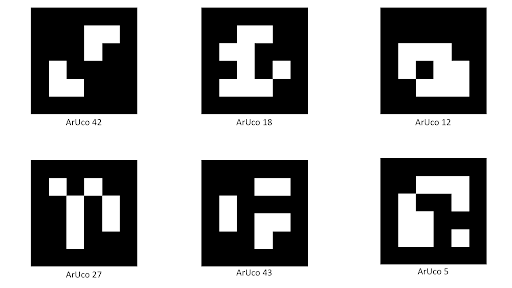

ArUco-маркеры — распространённый инструмент компьютерного зрения, применяемый для определения положения робототехнических систем.

Подсказка Для печати маркеров лучше выбирать как можно более матовую бумагу — глянец создаёт блики и заметно ухудшает качество их обнаружения.
Быстро создать маркеры для печати можно с помощью онлайн-генератора: http://chev.me/arucogen/.
В образе Technic для OPi заранее установлен пакет aruco_pose, обеспечивающий работу с ArUco-маркерами.
В Technic предусмотрено несколько готовых режимов взаимодействия с ArUco-маркерами:
Подсказка Подробную англоязычную документацию по пакету
aruco_poseможно найти на GitHub.